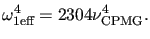
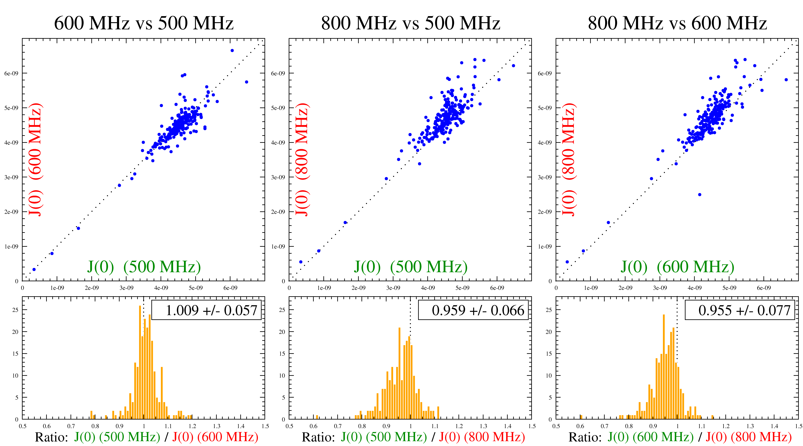

Next: The N-state model or Up: Consistency testing Previous: Consistency testing script mode Contents Index
The rest of the script is used to output the results to 2D Grace files for visualisation (the grace.view user function calls will launch Grace with the created files), and the output of the values into plain text files.
However, simply visualizing the calculated J(0), F, and FR2 values this way does not allow proper consistency testing. Indeed, for assessing the consistency of relaxation data using these tests, different methods exist to compare values calculated from one field to another. These include correlation plots and histograms, and calculation of correlation, skewness and kurtosis coefficients.
To complete the consistency testing analysis, the following steps are needed:
|

|
An example of such an analysis is shown in Figure 9.1. This example displays both consistent and inconsistent data. As the figure shows, the data recorded at 500 MHz and 600 MHz are consistent with each other whereas the data recorded at 800 MHz is consistent with the neither the 500 MHz nor 600 MHz data. Since more than two magnetic fields were used, this allowed the identification of the 800 MHz data as being inconsistent allowing the authors to take special care with this data set.
The 800 MHz data inconsistency is seen in the correlation plots (top) by a deviation from the dotted line (which represents the theoretical situation when equal J(0) values are extracted from both magnetic fields. It is also observable in the histograms (bottom) where the ratio of the data from two magnetic fields is not centered at 1.0. In fact, there seems to be a systematic shift of the calculated J(0) values at 800 MHz when compared to the two other magnetic fields. This is caused by a similar shift in the experimental R2 (transversal relaxation rate) data.
For the 500 MHz and 600 MHz data pair, the data are centered around the dotted line in the correlation plot (approach A, top left) as well as centered around a value of 1.0 in the histogram comparing the ratios of values from both magnetic fields (approach B, bottom left). Of course, there are some outlier values even in the case of consistent data. There are caused by specific dynamic characteristics of these spins and are different from systematic inconsistencies such as depicted in the example above with the data recorded at 800 MHz.